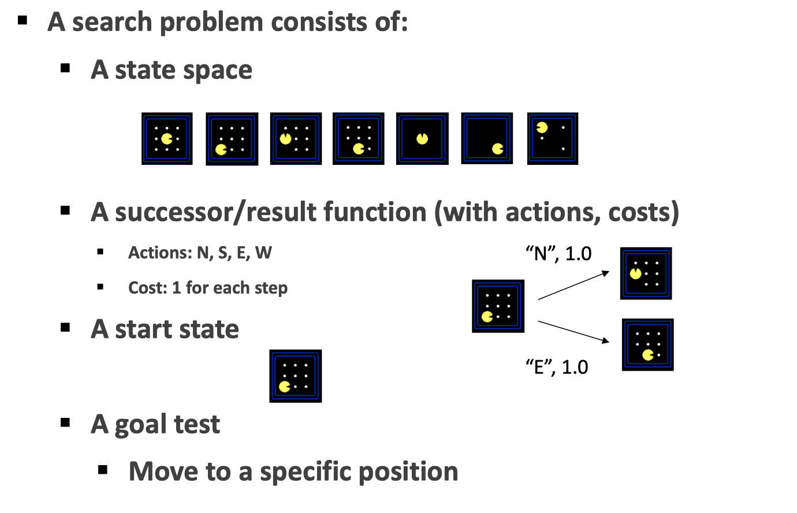
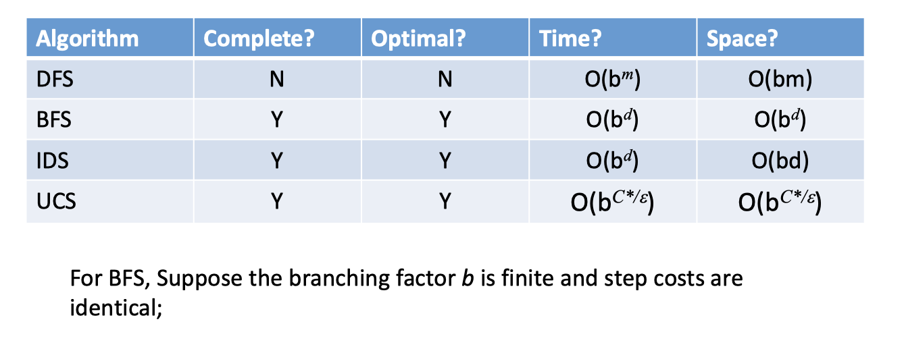
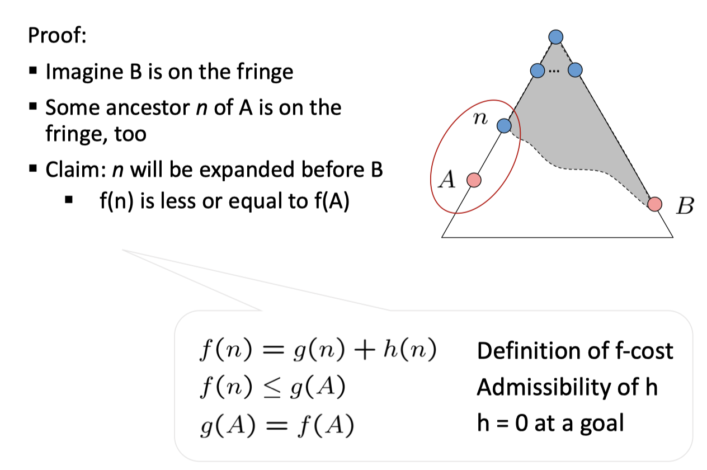
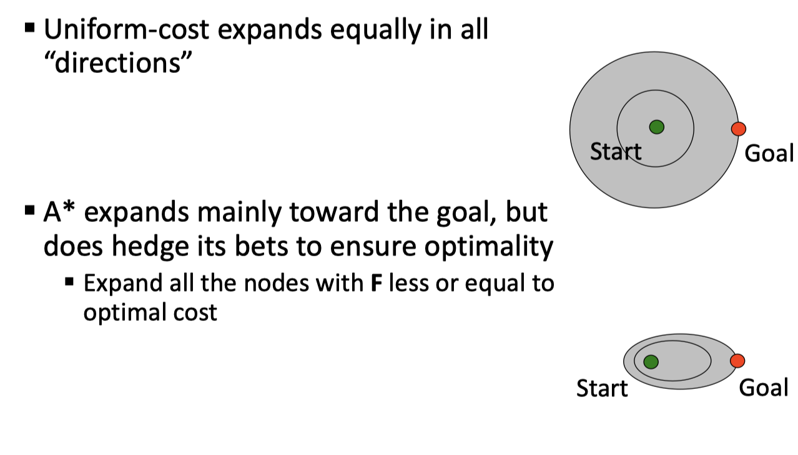
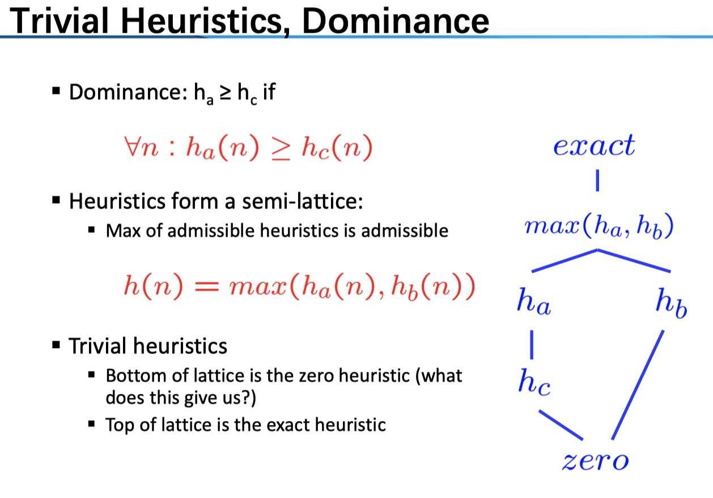
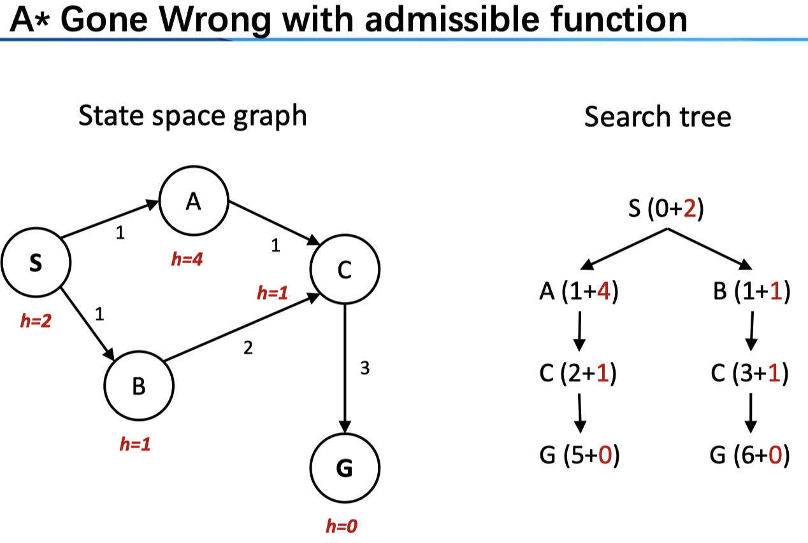
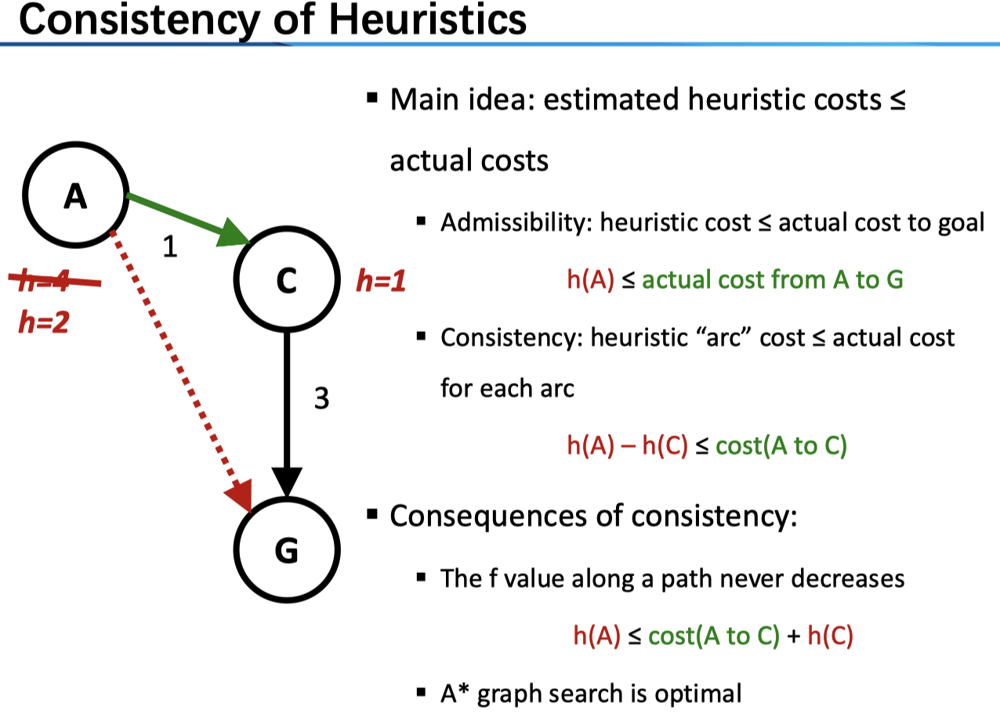

首先，我们定义一个搜索问题：
- a state space
- a successor/result function (with actions, costs)
- a start state
- a goal test
例如对于一个 Pacman 世界来说，状态空间就是 Pacman 所在的位置、豆子的状态所决定的；而后继函数可以包括了我们的动作以及所需要的代价（在这里每一方向上的代价都是 1）；我们从一个起始状态去搜索如何到达目标状态。

Note：对于实际的编程来说，最重要的应该是状态的表示，一个好的状态表示可以减少算法复杂度；为此，除了 World State 之外，还可以定义 Local State。
对于一个搜索问题来说，我们可以把不同的状态之间用后继函数连接起来，构成图（state space graph），节点表示状态有向边表示后继函数，注意这里每一个状态都只有一个；然而，在实际的操作中，树（search tree）则更为常见也更容易理解，它和图的区别在于，同一个状态可以对应着搜索树的不同节点，即 state 可重复。
搜索算法可分为无信息和有信息搜索
Uninformed Search
有 深度优先（Depth-First Search DFS）、广度优先（Breadth-First Search BFS）、迭代加深（Iterative Deepening IDS）、代价一致（Uniform-Cost Search UCS）等。其思想都是差不多的，只是在实现和性质上面有着些许不同。
对于搜索算法的评价，首先是完备性（complete）和最优性（optimal）。完备性意味着总能找得到解，而最优性则意味着找到的解是否为最好的。当然，考虑到实用性还需要考虑时间、空间复杂度。

还是从 DFS 和 BFS 讲起吧。可以考虑地图（状态图）上一个点到另一个点的路径。DFS 的思想是：我们一条路走到底，遇到了问题再退回去，找新的路——看起来是一种很任性的方法，但它的好处在于节省了空间，相较于 BFS，它并不需要存储所有已到达的 state，而仅需要存储其所在的路径（对于某一点，在拓展的时候我们可以按照字典序，这样就避免了重复）。这种看似随意的搜索方法当然会有问题：甚至对于一个简单的地图问题来说，其搜索树都可能是 infinte 的，也就是说，它并不是 complete 的（当然也不是 optimal 的。当然，我们可以通过限制搜索深度保障完备性）。BFS的意思是比较直观的：我们一层层、按照距离的远近来需要目标状态，这种方法唯一的问题在于空间复杂度，很多情况下我们并没有那么多的内存在存储庞大的状态空间。具体来说，两者维护的 fringe 是不同的，分别是 LIFO stack 和 FIFO queue（当然，这些都属于术的层面了）。既然 BFS 和 DFS 都有着各自的优缺点，那么IDS就是想把两者的优势结合在一起了：我们保留 DFS 的空间特性，为了保障算法的正确性，我们采取迭代加深的方法，顾名思义即限制搜索的深度，搜索完 d 层之后，若没有找到目标则进一步搜索 d+1 ；妙的是，这几乎没有带了时间上的太多损耗，至少两者在复杂度上是一致的，以理想的搜索树模型来说（每个节点的子节点规模一致），其不过使得时间成本提升了一倍。
前面提到，DFS 和 BFS 在实现的层面上分别使用了stack 和 queue，我们将其统一起来：两者的差别无非在于，我们关注的「优先级」不同，对于前者我们更关心更深的节点，对于后者则赋予更浅的节点以高的优先级。我们用优先队列的概念来说，每次拓展的节点都是「优先级」最高的那一个——事实上，我们之后提到的有信息搜索中，采取的是同样的思路，不过我们对于排序的选择还加上了另外的一些 heuristic。这里的UCS也是一样的：对于 DFS 和 BFS 来说，我们讨论的框架都是在每一个状态之间的 cost 都是一样的情况下，而实际中如地图问题，城市之间的距离（cost）是不同的。我们的思路也是一样，每次把距离最小的那个节点拿出来加以拓展。Note：这时候，在 goal test 上要小心，我们不能检测到目标状态就直接结束算法，而要继续运行以确保该条路径是最优的；也就是说，我们在拓展的时候不进行目标检测，而是将各节点计算好相应的「代价」之后放入优先队列，而是在节点弹出的时候才进行目标检查。
Informed Search
对于 uninformed 来说，we only care about past, but never “look ahead”；然而，事实上我们可以把一些全局的信息利用起来，如 Manhattan distance 或 Euclidean distance 作为 Heuristics Function。
我们先来看一个极端情况（完全不考虑 history）Greedy Search：我们只相信我们的「直觉」（启发函数），每次往我们认为最好那个节点前进。很显然，这样会出问题，想想迷宫就知道了，也就是说，这样无法保障完备性和最优性。A* Search 解决了这一问题，其思想是
Take into account the cost of getting to the node as well as our estimation of the cost of getting to the goal from the node.
评价函数 Evaluation function
\[
f(n) = g(n) + h(n)
\]
其中 \(g\) 是我们到节点 \(n\) 的 cost，而 \(h\) 是我们对于该节点到目标节点的启发式估计。
对于启发函数，我们要问的是：什么样的启发函数才能保障最优性？对于 Tree Search 来，我们有结论：
A heuristic \(h\) is admissible (optimistic) if:
\[
0\le h(n)\le h^*(n)\tag{1}
\]
where \(h^*(n)\) is the true cost to a nearest goal
也就是说，我们启发式的代价要比真实的代价小，即 可接受的 admissible。以下简证

对于一个树上两目标节点 A 和 B，假设 A 为最优的，假如 B 和 A 的一个祖先 n 同在 fringe 中，由于 admissible，\(f(n)<g(B)\)，也就是说 n 会先被弹出……最终 A 和 B 同在 fringe 中，而 \(h(A)=0\)，也就是说，我们先找到了 A。
一个图直观地理解启发搜索和 UCS 的区别：

另一个问题，怎样找到启发函数？一门玄学……常见的思路是
- 从 relaxed problem 出发，即忽略某些限制，例如地图问题中，我们采用 Manhattan distance 或 Euclidean distance 都是忽略了墙；对于 8 Puzzle 问题来说有两个限制：不能重叠（只能移动到空的框中），只能走一步（不能「飞」），那么我们就可以任意取消一个限制构成 relaxed problem
- 从 sub-problems 出发，考虑子问题。如 8 Puzzle 问题中，我们只考虑 1-4 号牌，而将 5-8 号牌看成是任意的（注意没把它拿走，仍然构成上面了两个约束，仅仅是要解决的问题变成了原问题的一部分）；更直观的理解可以是魔方只复原底层。

我们可以选取不同的启发函数，一般来说，它和真实值越接近，效果自然越好。一个 trivil 的情况是，全部设为 0（显然是 admissible 的），这样就退化为 UCS 了，而另一个极端，exact 的 heuristic 则可以保障我们不走「弯路」，直接找到了路径。所以，这又是 heuristic 的精确性和计算复杂度之间的 balance。
以上，我们只是讲了 Tree Search 的情况，对于 Graph Search 则更为复杂。后者的 idea 是 never expand a state twice，具体的实现是通过 Tree search + set of expanded states (“closed set”) ；在搜索时，我们为了防止重复，维护了一个集合，在拓展节点之前，我们先检查其是否在已搜索的节点结合之中，若已经搜索过了则跳过。这是一个很棒的想法，减小了计算的成本。然而在这种情况下，单单是 admissible 无法保障最优性。来看一个例子

这里的 heuristics 是 admissible 的，然而，我们先从 B 到达 C（\(f(C)=4<f(A)=5\)），而对于 A 进行拓展时（注意它会比 G 先弹出进行拓展），我们不会再拓展 C（其在 closed set 中），这样就造成了非最优的一条路径。
对于图搜索来说，我们要求启发函数 一致性 consistency
Consistency: heuristic “arc” cost \(≤\) actual cost for each arc
\[
h(A)-h(C)\le cost(A to C)\tag{2}
\]

对于（1）式来说，我们仅仅要求任意节点到 goal 的估计是乐观的（admissible）；而对于（2）式来说，我们要求，任意一条弧上的估计都是乐观的。上图中，从 A 到 C 的路径出了问题，我们若将 A 的 heuristic 改为 2 即符合了 consistency。
简证：1. 对于树搜索来说（显然图搜索可以表为树搜索，即不去维护 closed set），consistency 事实上保证了，我们每次拓展的节点都是「代价最小的」（因为 consistency 事实上保证了，任意两点之间，若把后者看做是 goal，则其是 admissible 的）；2. 这也就是说，对于每一个节点来说，其在进行 fringe 的时候，代价都是最小的，即是最优路径。结论：A* graph search is optimal。
总结一下：
- 对于 Tree search
- A* is optimal if heuristic is admissible
- UCS is a special case (h = 0)
- 对于 Graph search
- A* optimal if heuristic is consistent
- UCS optimal (h = 0 is consistent)
- Consistency implies admissibility
进一步阅读：《计算智能》（一）搜索 讲了另外的一些搜索算法。